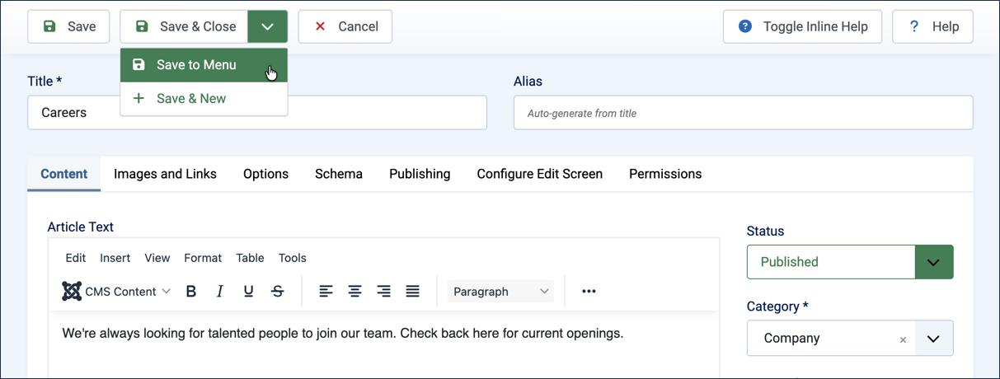
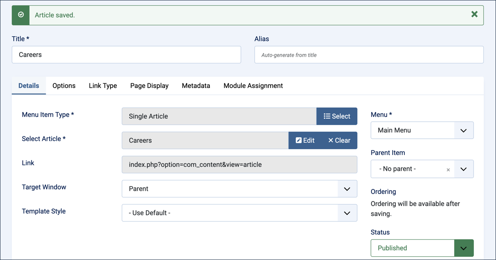
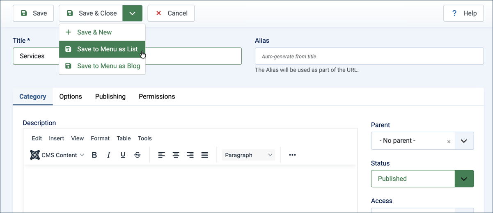
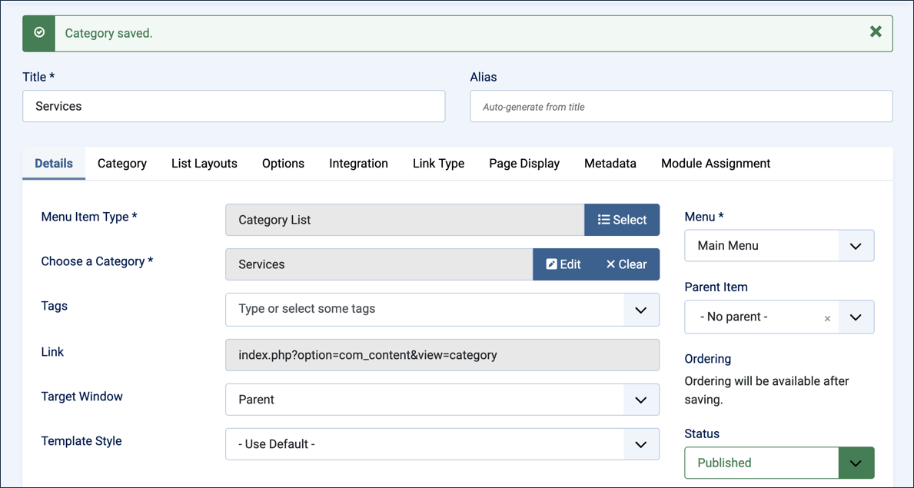

In 2.1 Article & Menu Item we first saved an article and then made a menu item for it. Now we will take a shortcut, combining those two steps into one. We'll do the same with a category: we'll combine the steps of saving a category (see 2.2 Creating a Category) and making a menu item for it (see 2.3 Category Menu Item).
Article Text:We're always looking for talented people to join our team. Check back here for current openings.
Instead of clicking Save & Close, click the dropdown arrow on the Save & Close button and select Save to Menu.

Selecting Save to Menu from the Save & Close dropdown
This opens the menu item editor, prefilled with the required fields (those boxed in red):
Title: the article title, Careers
Menu Item Type:Single Article
Select Article:Careers
Menu:Main Menu

The prefilled menu item form, ready to review
Review the settings, making adjustments as necessary, then click Save & Close. Result: The new Careers menu item appears in the list of Main Menu items.
Save a Category to a Menu
The same shortcut is available for categories, saving the category and opening a prefilled Category Blog or Category List menu item for it in one step.
In the Administrator Menu, click Content > Categories.
Click New. Result: A new-category form appears.
Title:Services
Instead of clicking Save & Close, click the dropdown arrow on the Save & Close button and select Save to Menu as List. Result: The category is saved, and a new menu item form opens, prefilled for a Category List of Services.

Selecting Save to Menu as List from the Save & Close dropdown
Review the prefilled fields (Menu Item Type:Category List; Choose a Category:Services), adjusting the Title if you like — for example, Our Services makes clear what the link leads to.

The prefilled Category List menu item form, ready to review
Click Save & Close. Result: The Services category now has a Category List menu item linking to it.
View the site frontend to see the new menu item. Note: The page will be empty for now, since no articles have been assigned to Services yet — any you add later will appear here automatically.
Tip:Save to Menu as Blog works the same way, but creates a Category Blog menu item instead of a Category List. Select it from the same dropdown when saving a category.
Concepts
Save to Menu is a shortcut in the Save & Close dropdown for articles and categories. It saves the item you're editing and immediately opens a prefilled menu item form for it, combining two separate tasks into one.
The prefilled menu item form still lets you review and adjust every field, including the title, before saving.
Categories offer two shortcut variants, Save to Menu as List and Save to Menu as Blog, matching the two menu item types demonstrated in 2.3 Category Menu Item.